# access help documentation for hist
?hist #Side panel should open with help docAppendix B — An Overview of Plotting Data in R

Introduction
Plots can provide a useful visual summary of the data. Sometimes, a nice plot or two is all that is need for statistical analysis. In this document, we cover a basic overview of creating some plots in R.
Here’s a link to a more thorough coverage of plotting in R: https://r-graph-gallery.com/index.html.
Help Documentation
The plotting functions introduced in this document have robust help documentation with lots of options to customize your plots. If you want to view help documentation for any of the functions used in this document, run commands such?hist, ?plot, ?table, and so on.
What Are Packages in R?
R packages are a collection functions, sample data, and/or other code scripts. R installs a set of default packages during installation.
Run the code cell below to get a list of all default R packages that are already installed.
# See a list of installed default packages
allpack <- installed.packages()
rownames(allpack)Loading Packages with the library() Command
Each time we start or restart a new session and want to access the library of functions and data in the package, we need to load the library of files in the package with the library() command.
To demonstrate how to create common statistical plots in R, we will use the storms data set which is located in the package dplyr.
- The
dplyrpackage is already installed in Google Colaboratory - We still need to use a
librarycommand to load the package. - Run the code cell below to load the
dplyrpackage.
# load the library of functions and data in dplyr
library(dplyr)Reloading Packages When Restarting a Session
If we take a break in our work, it is possible our R session will time out and close. Each time we restart an R session, we will need to rerun library() commands in order reload any packages we plan to use.
The same caution applies to any objects, vectors, or data frames we create or edit in an R session. If a session times out, and we want to use an object x that we previously created, we will need to run the code cell(s) where object x is created again before we can refer back to x in the current session.
BE SURE YOU RUN THE COMMAND library(dplyr) BEFORE ATTEMPTING TO RUN ANY OF THE CODE CELLS BELOW!
Summarizing storms Data
The package dplyr contains a data set called storms. Let’s find some useful information about this data.
- The first code cell below will open the help manual for
stormsin a side bar.- Feel free to close the help side bar.
- The second code cell below will provide a numeric summary of all variables in the
stormsdata. - Recall we need to first run the command
library(dplyr)in the code cell above to be able to accessstorms.
# be sure to run the code cell above first
# so you have loaded the dplyr package
?storms # See a summary of all variables
summary(storms) name year month day
Length :20778 Min. :1975 Min. : 1.000 Min. : 1.00
N.unique : 268 1st Qu.:1995 1st Qu.: 8.000 1st Qu.: 8.00
N.blank : 0 Median :2005 Median : 9.000 Median :16.00
Min.nchar: 3 Mean :2004 Mean : 8.708 Mean :15.71
Max.nchar: 10 3rd Qu.:2016 3rd Qu.: 9.000 3rd Qu.:24.00
Max. :2024 Max. :12.000 Max. :31.00
hour lat long status
Min. : 0.000 Min. : 7.00 Min. :-136.90 tropical storm :7252
1st Qu.: 5.000 1st Qu.:18.30 1st Qu.: -78.60 hurricane :5100
Median :12.000 Median :26.40 Median : -61.90 tropical depression:3685
Mean : 9.102 Mean :26.94 Mean : -61.32 extratropical :2318
3rd Qu.:18.000 3rd Qu.:33.80 3rd Qu.: -45.30 other low :1623
Max. :23.000 Max. :70.70 Max. : 13.50 subtropical storm : 323
(Other) : 477
category wind pressure tropicalstorm_force_diameter
Min. :1.000 Min. : 10.00 Min. : 882.0 Min. : 0.0
1st Qu.:1.000 1st Qu.: 30.00 1st Qu.: 986.0 1st Qu.: 0.0
Median :1.000 Median : 45.00 Median :1000.0 Median : 120.0
Mean :1.899 Mean : 50.07 Mean : 993.4 Mean : 148.1
3rd Qu.:3.000 3rd Qu.: 65.00 3rd Qu.:1007.0 3rd Qu.: 220.0
Max. :5.000 Max. :165.00 Max. :1024.0 Max. :1440.0
NAs :15678 NAs :9512
hurricane_force_diameter
Min. : 0.00
1st Qu.: 0.00
Median : 0.00
Mean : 14.82
3rd Qu.: 0.00
Max. :300.00
NAs :9512 One Quantitative Variable
Often a graph or plot is a more preferred format to summarize a variable than a summary statistics. The documentation below explains we could graphically summarize the quantitative variable pressure.
Histograms
The hist function can be used create a histogram of a numerical vector.
- See histogram documentation: https://r-graph-gallery.com/histogram.html
- Like making colorful plots? Here’s a guide to colors in R.
- We use a
$symbol to indicate the name of the variable instormswe will access in the plot.
hist(storms$pressure, # plot pressure variable in storms data
xlab = "storm pressure (in millibars)", # x-axis label
main = "Distribution of Storm Pressure", # main title
breaks = 10, # number of breaks or bins
col = "aquamarine4") # color of bars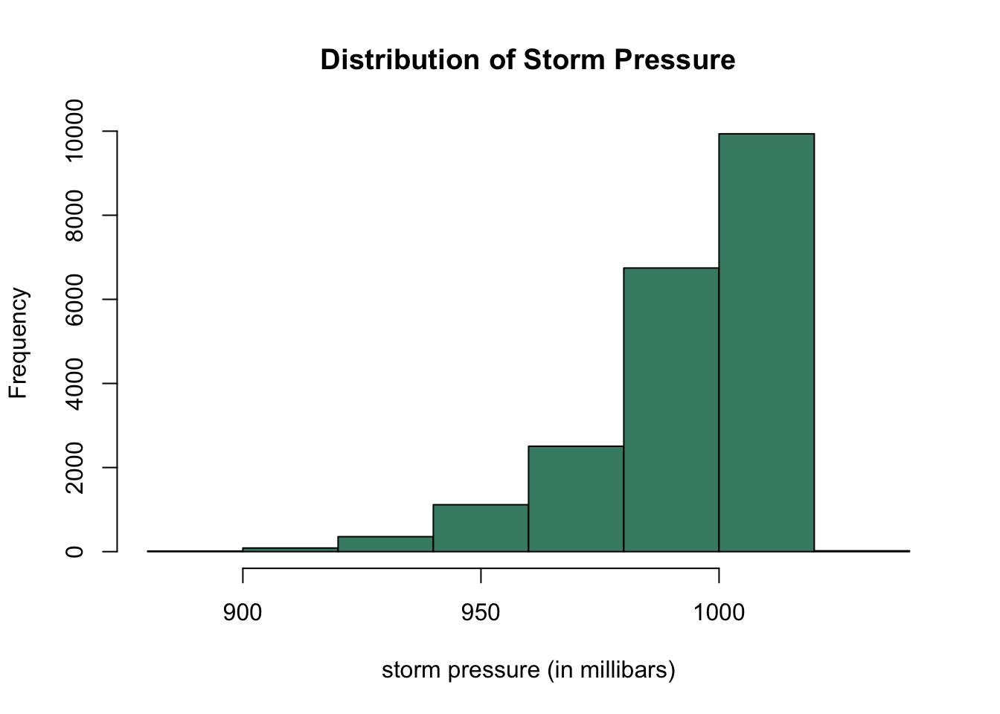
Density plots
A histogram is more sensitive to its options. For example, a histogram with 3 breaks may tell a different story than plotting the same data with 20 breaks.
Thus, we may prefer to use a density plot.
- First compute density of
pressure.
- For more information, see density help documentation.
- The
plot()function will then create a density plot.
- For more advanced density plots see https://r-graph-gallery.com/density-plot.html.
- If a variable is categorical,
plot()will create a different plot, namely a bar chart. plot()can also be used to generate a plot to compare two different variables.- The output of
plot()depends on the type and number of variables that we input in the function.
# approximate densities and then plot
plot(density(storms$pressure),
xlab = "storm pressure (in millibars)", # horizontal axis label
main = "Distribution of Storm Pressure") # main title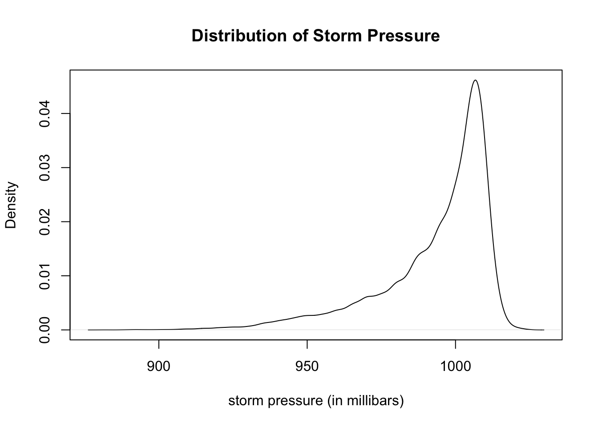
Boxplots
Boxplots are another useful plot for presenting the distribution of a quantitative variable using quartiles and the five number summary.
- See boxplot documentation at https://r-graph-gallery.com/boxplot.html.
- Run the command
?boxplotto see more options.
# create boxplot of quantitative variable
boxplot(storms$pressure,
ylab = "storm pressure (in millibars)", # horizontal axis label
col = "gold", # color of box
main = "Distribution of Storm Pressure") # main title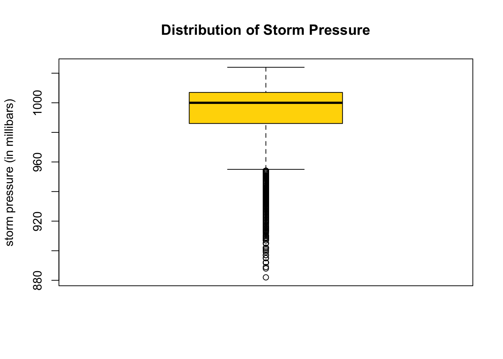
Changing the Layout of Boxplots
# horizontally aligned boxplot
boxplot(storms$pressure,
horizontal = TRUE, # display horizontally
xlab = "storm pressure (in millibars)", # horizontal axis label
main = "Distribution of Storm Pressure", # main title
col = "azure3") # color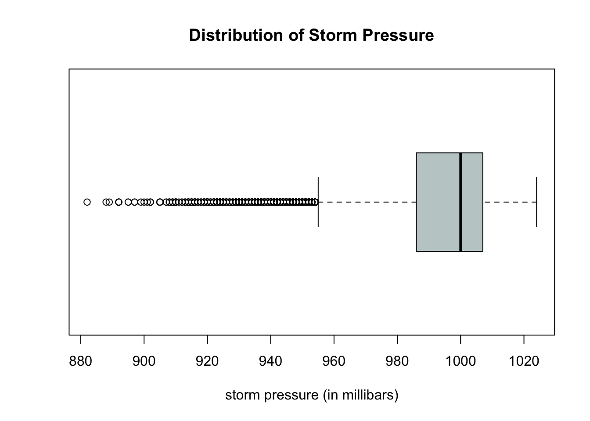
One Qualitative Variable
Qualitative (also called categorical) variables required other types of plots. For example, we cannot create a density or boxplot for a qualitative variable. Qualitative variables may be stored as characters (such as the status variable) or values (such as the category variable). This brings up a good question:
How can we tell whether a variable is stored as a numerical variable, a categorical variable, or perhaps as a string of characters?
Checking the Data Type
The typeof() command can help identify what is the type of a variable.
typeof(storms$status)[1] "integer"typeof(storms$category)[1] "double"Data Types
From the output above, we see:
- The variable
statusis initially read as aninteger. - The individual values are strings of characters such as “tropical storm” or “hurricane”.
- The summary statistics of
statusare counts that are stored as integers. - The variable
categoryis initially read asdoubleor decimal values. - The individual values are ordinal integers “1”, “2”, “3”, “4”, and “5” for category of hurricane.
- There are 15,678
NA(or missing) values corresponding to the observations that are not hurricanes. - The summary statistics of
category(such as the mean) are stored decimals. - However, we would like to treat
categoryas a qualitative variable and plot how many storms fall into each category.
Caution with Data Types and Using plot()
If we try to use the general plot() function, R will give its best guess at which plot makes the most sense to display the data. If the data is stored as the wrong data type, plot() will not work as we might expect.
- Run the two code cells below, and notice the following:
- The output of the
plot(storms$status)looks like a reasonable bar chart. - The output of
plot(storms$category)does not nicely summarize the counts of how many storms are in each category.
- The output of the
plot(storms$status) # plot of status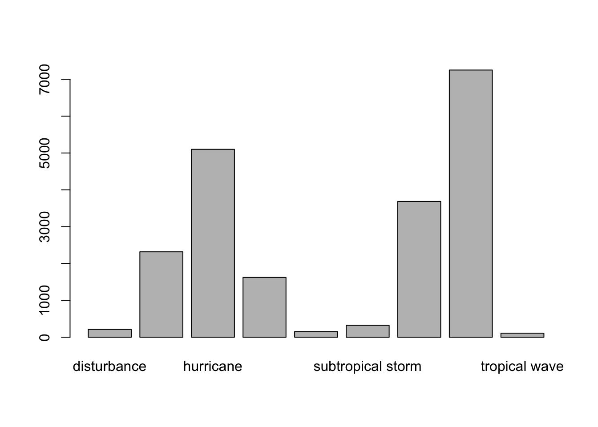
plot(storms$category) # plot of category
Creating Bar Charts From Tables
The table() function will count the number of times a value (or string of characters) occurs in a vector or variable.
One way to improve the initial plot of categories above is as follows:
- First use the
table()command to count how many storms are in each category. - Then create a bar chart using the
barplot()function.
cat.table <- table(storms$category) # create table of counts
cat.table # print table to screen
1 2 3 4 5
2707 1046 632 586 129 # create bar chart from table counts
barplot(cat.table, # input table from previous code cell
main = "Distribution of Hurricane Categories", # main title
xlab = "Hurricane Category", # horizontal axis label
ylab = "Frequency", # vertical axis label
col = "steelblue") # fill color of bars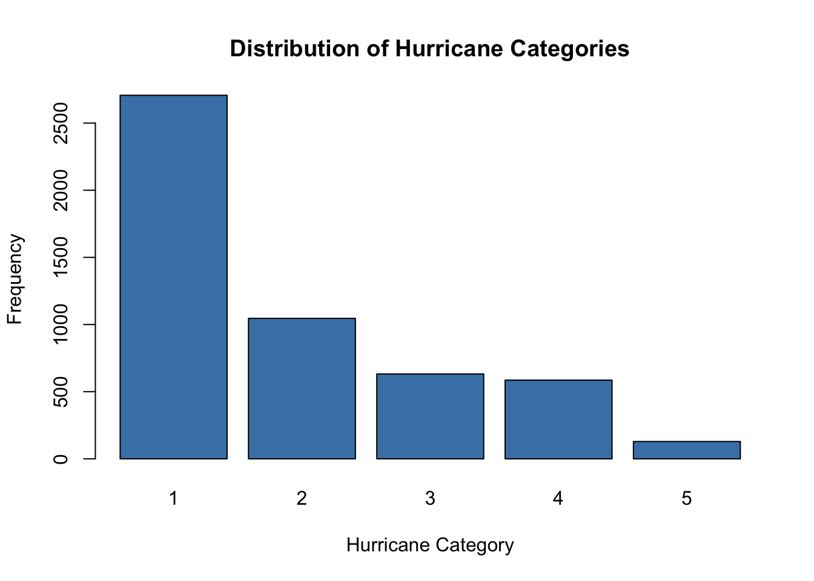
Relative Frequency Tables and Bar Charts
If instead of plotting the number of hurricanes in each category we wish to plot the proportion of all hurricanes in each category, we can use the prop.table() function to convert the table counts to proportions relative to the grand total.
Run the two code cells below to create a relative frequency bar chart.
- We input our previous table of counts,
cat.table, into the functionprop.table()to convert counts to proportions. - Then we create a bar chart of the resulting proportions.
cat.prop <- prop.table(cat.table) # create table of proportions
barplot(cat.prop, # input table of proportions
main = "Relative Frequency of Hurricane Categories", # main title
xlab = "Hurricane Category", # horizontal axis label
ylab = "Proportion", # vertical axis label
col = "steelblue") # fill color of bars
CautionCaution with
prop.table()
- The input into
prop.table()must be a table rather than a vector or data frame column. - The code cell below does return a relative frequency table as we would expect since we did not first create a table of counts from
storms$category.
temp <- prop.table(storms$category) # do not input a vector
head(temp) # print first several entries of result[1] NA NA NA NA NA NAPie Charts with pie()
Pie charts can also be used to illustrate the distribution of one qualitative variable.
- See https://r-graph-gallery.com/pie-plot.html.
- For help and a list of options, you can run
?pie.
?pie# create pie chart of one qualitative variable
pie(cat.table, # input table
main = "Distribution of Hurricane Categories") # main title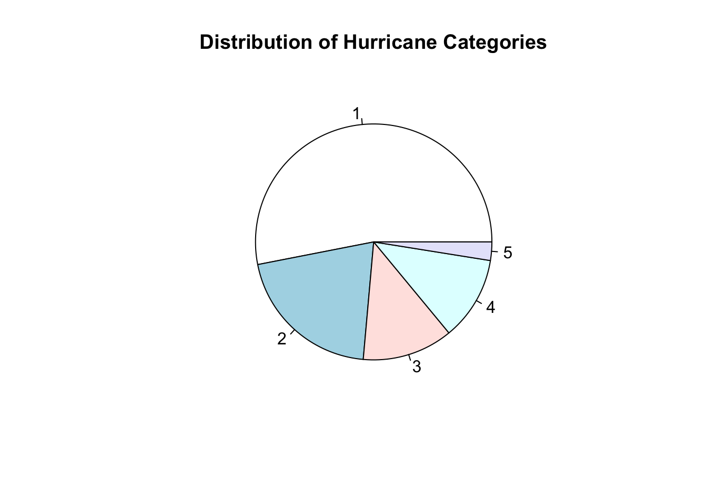
Converting to a factor() and Then plot()
One common issue with a qualitative variable is that it is often stored as the wrong datatype.
- Qualitative data should typically be stored as a
factor.
Another way we can create a bar chart of the counts in each category is to:
- First convert the qualitative variable to a
factor. - Then use
plot()to create an appropriate plot.
Run the code cell below to first see the summary output of the category variable after converting it to a factor.
# creates a copy of storms data set
# so we don't overwrite original storms
storms2 <- storms
storms2$category <- factor(storms$category) # convert category to factor
summary(storms2$category) # get new summary of categories 1 2 3 4 5 NAs
2707 1046 632 586 129 15678 Notice the summary is a table of counts in each hurricane category.
- Once the variable
statusis converted to afactor, theplot()function will know to use a bar chart to give a summary display.
# create bar chart from counts of a factor
plot(storms2$category, # input a factor
main = "Distribution of Hurricane Category", # main title
xlab = "Hurrican Category", # horizontal axis label
ylab = "Frequency", # vertical axis label
col = "steelblue") # color of fill of ba- Recall without first changing
categoryto afactor,plot()will create a different graph.
# default plot of category when not first converted to factor
plot(storms$category)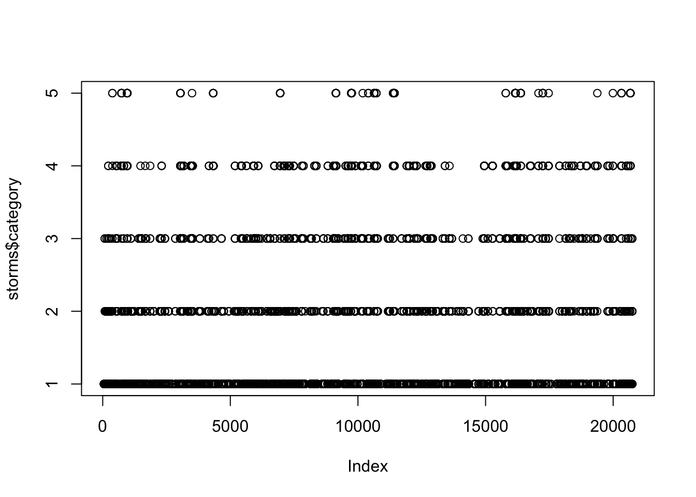
Plotting One Quantitative and One Qualitative Variable
Imagine we would like to compare the wind speeds of storms by status. In this case, we would like to compare a quantitative variable (wind) for different classes of a qualitative variable (status).
Side by Side Boxplots
There are many classes of storms status in storms.
In the storms data:
windis a quantitative variable.statusis a qualitative variable.- We can use the default
plot()function to create a side by side boxplots.
# create a vector of fill colors
# one color for each status type.
my.colors <- c("green", "purple", "grey", "red",
"blue", "gold", "cyan", "pink", "orange")
plot(wind ~ status, # quantitative first ~ categorical second
data = storms, # name of data frame
col = my.colors, # fill colors
main = "Wind Speeds of Storms by Status") # main title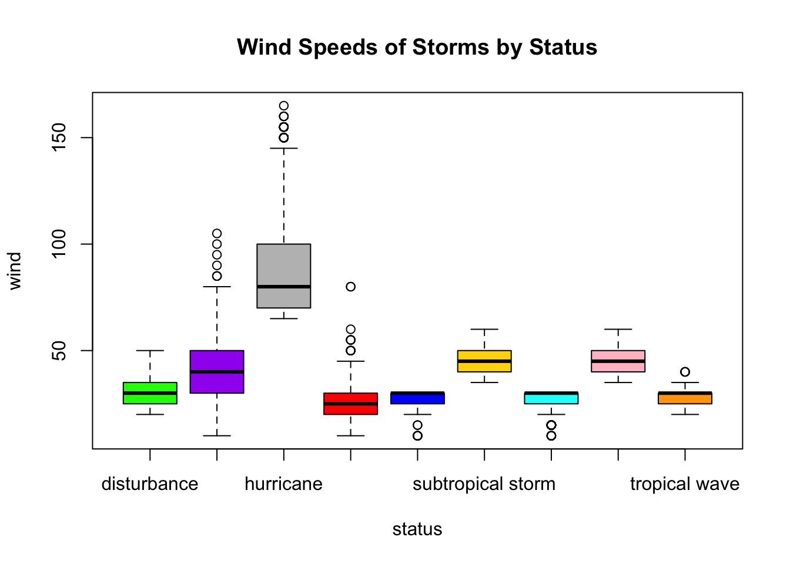
Adding a Legend to Plots
- There are a lot of different status of storms.
- It is not easy (or possible) to tell which boxplot corresponds to which storm status.
- Adding a legend to the plot will help!
# create a table of status counts
# we will pull of the row names of the table
# as the labels in the legend
status.table <- table(storms$status)
plot(wind ~ status, # quantitative first ~ categorical second
data = storms, # name of data frame
col = my.colors, # fill colors colors
ylab = "Wind speed in knots", # vertical axis label
main = "Wind Speeds of Storms by Status") # main title
# we can add a legend to identify which plot is which storm status
legend(x = "topright", # place legend in top right corner
legend=rownames(status.table), # each row of table is label in legend
fill = my.colors) # fill colors
Subsetting Data by Category
There are many classes of storms status in storms. Often, we want to only focus on a smaller subset of classes. We can restrict our attention to compare the wind speeds of three of the classes: “tropical storm”, “tropical depression”, and “hurricane”.
- We can subset
stormsdata frame into three separate data frames, one for each status of storm, using thesubset()function. - Curious to learn more about
subset? Run?subsetin a code cell to access help documentation. - Then we can create three separate boxplots of the wind speeds for each status.
# split data by storm status
hur <- subset(storms, # data frame name
status == "hurricane", # logical test to select observations
select = wind) # which quantitative variable(s) to select
trop.storm <- subset(storms,
status == "tropical storm", # tropical storms
select = wind)
trop.dep <- subset(storms,
status == "tropical depression", # tropical depressions
select = wind)
# create side by side boxplot
# for each of the three subsets
boxplot(hur$wind, trop.storm$wind, trop.dep$wind,
main = "Windspeed of Storms",
names = c("Hurricanes", "Tropical Storms", "Tropical Depressions"),
col = c("red", "blue", "green"),
xlab = "Wind speed in knots",
horizontal = TRUE)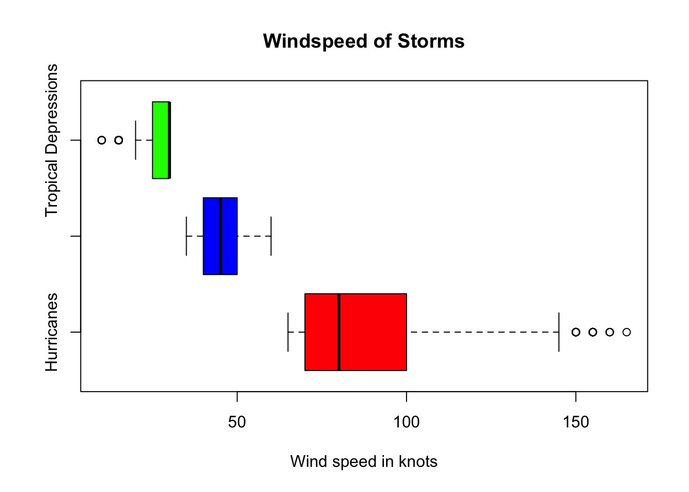
Relationship Between Two Qualitative Variables
Imagine we would like to compare the number of different category hurricanes that occurred in each month. In this case, we would like to compare two qualitative variables, namely category and month.
Creating Contingency or Two-Way Table
The command table(x) will count the number of times a value (or string of characters) occurs in a vector x.
The command table(x, y) will similarly create a contingency (or two-way) table to jointly compare counts of x and y.
# create a contingency table for status and month
con.table <- table(storms$category, storms$month)
con.table # print output to screen
1 4 5 6 7 8 9 10 11 12
1 5 0 0 19 156 612 1199 527 156 33
2 0 0 0 1 38 211 601 159 36 0
3 0 0 0 1 23 119 375 95 19 0
4 0 0 0 1 27 120 314 100 24 0
5 0 0 0 0 5 32 71 21 0 0Creating Grouped Frequency Bar Charts
After creating a two-way table, we can present the results visually in a grouped bar chart.
- See documentation at https://r-graph-gallery.com/211-basic-grouped-or-stacked-barplot.html.
# create a vector of colors
my.colors2 <- c("green", "purple", "grey", "red", "blue")
# create side by side bar chart
barplot(con.table, # use counts from contingency table
beside = TRUE, # groups side-by-side
main = "Category Hurricanes By Month", # main title
xlab = "Month", # horizontal axis label
col = my.colors2, # fill color of bars
ylab = "Frequency") # vertical axis label
# add a legend to plot
legend(x="topleft", # place legend in top left
legend=rownames(con.table), # get labels from row name in contingency table
fill = my.colors2) # use same fill colors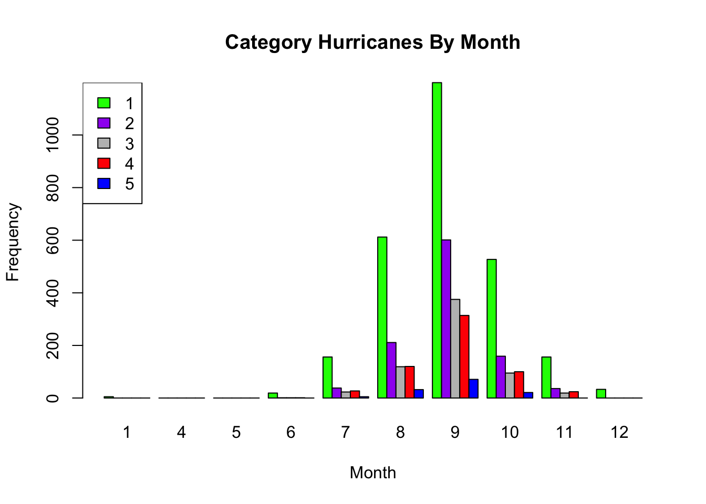
Grouped Frequency Bar Charts
- Note
beside = FALSEis the default. - If we do not specify a
besideoption, a stacked bar chart is created instead. - In the second code cell, we also add a legend to the plot.
########################################################
# Note this has already been run in a previous section
# You do not need to run again if already created
#######################################################
# create a contingency table for status and month
con.table <- table(storms$category, storms$month)
con.table # print output to screen# create a vector of colors
my.colors2 <- c("green", "purple", "grey", "red", "blue")
# create stacked bar chart
barplot(con.table, # use counts from contingency table
main = "Category Hurricanes By Month", # main title
xlab = "Month", # horizontal axis label
col = my.colors2, # color of bars
ylab = "Frequency") # vertical axis label
# add legend to plot
legend(x="topleft", # place legend in top left
legend=rownames(con.table), # get labels
fill = my.colors2) # use same colors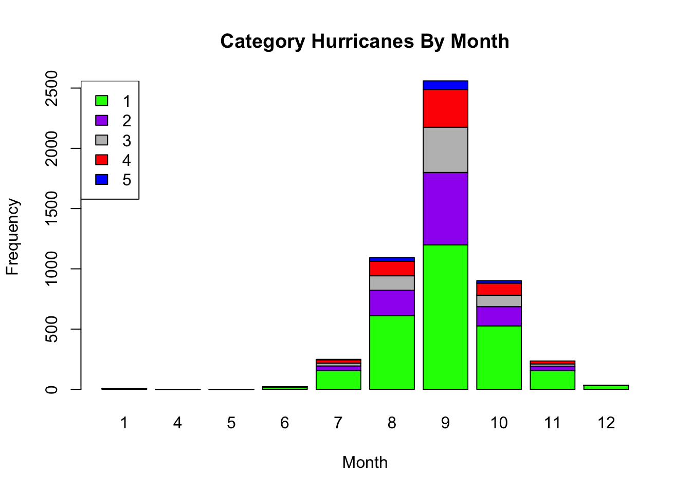
Stacked Bar Charts Relative to Grand Total
- First we create a contingency table using
table(x, y). - Then we use
prop.table([table_name])to convert to frequencies to proportions out of the grand total. - Finally we can create a group bar chart of relative frequencies.
# create two-table of counts
con.table <- table(storms$category, storms$month)
# convert counts to proportions
con.prop <- prop.table(con.table)
# create a vector of colors
my.colors2 <- c("green", "purple", "grey", "red", "blue")
# create stacked bar chart
barplot(con.table, # use counts from contingency table
main = "Category Hurricanes By Month", # main title
xlab = "Month", # horizontal axis label
col = my.colors2, # color of bars
ylab = "Relative Frequency (of grand total)") # vertical axis label
legend(x="topleft", # place legend in top left
legend=rownames(con.table), # get labels
fill = my.colors) # use same fill colors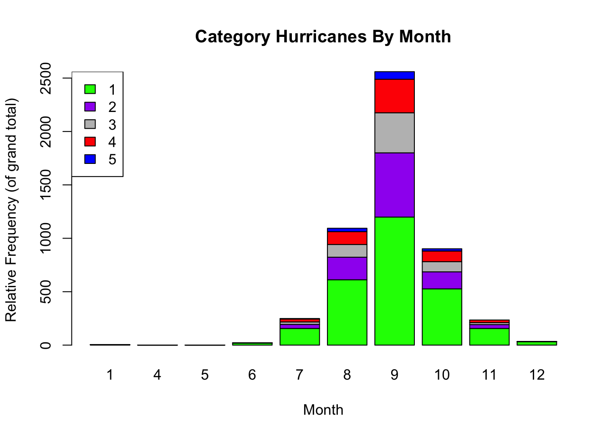
Stacked Bar Chart Relative to Column Totals
Often, we would like the proportions in the table to be computed out of the total in each column (instead of the grand total).
- We add the option
2insideprop.table(). - In this example, each column is a different month.
# create two-table of counts
con.table <- table(storms$category, storms$month)
# convert counts to proportions
# note the option 2 added to command below
con.prop.column <- prop.table(con.table, 2)
# create a vector of colors
my.colors2 <- c("green", "purple", "grey", "red", "blue")
# create stacked bar chart
barplot(con.prop.column, # use counts from contingency table
main = "Category Hurricanes By Month", # main title
xlab = "Month", # horizontal axis label
col = my.colors2, # color of bars
ylab = "Relative Frequency (to month totals") # vertical axis label
legend(x="topleft", # place legend in top left
legend=rownames(con.table), # get labels
fill = my.colors) # use same fill colors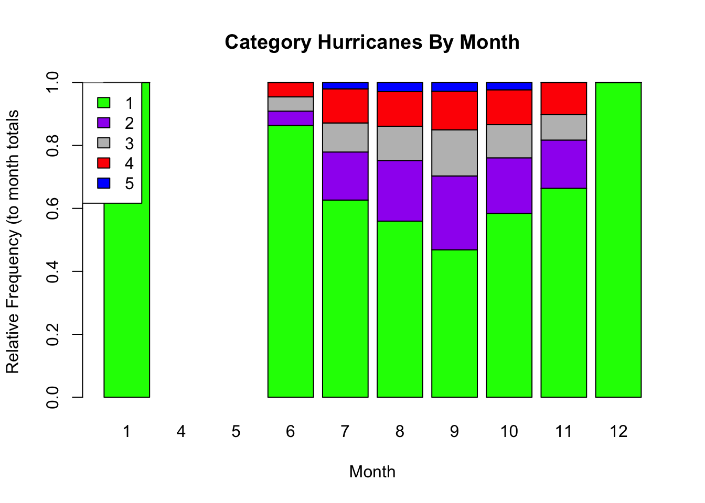
Relationship Between Two Quantitative Variables
Imagine we would like to compare the wind speeds (wind) to the pressure (pressure). In this case, we would like to compare two quantitative variables.
A scatter plot can be used to identify the relationship between two quantitative variables.
If both variables are quantitative, the
plot()function by default will create a scatter plot to compare the two variables.For other types of scatter plots, see documentation: https://r-graph-gallery.com/scatterplot.html.
# create a scatter plot
# first variable wind is response (y-axis)
# second variable pressure is predictor (x-axis)
plot(wind ~ pressure, # response ~ predictor(s)
data = storms, # data frame name
main = "Relation of Pressure and Wind Speed of Storms", # main title
xlab = "Pressure (in millibars)", # horizontal axis label
ylab = "Wind Speed (in knots)") # vertical axis label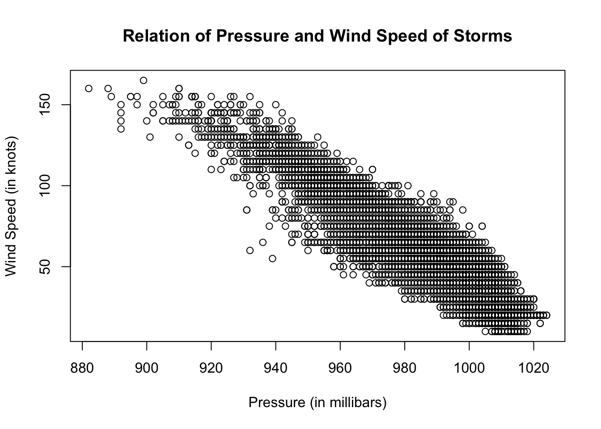
Arranging Multiple Plots in an Array
The command
par(mfrow =c(n,m)creates an array of \(n\) rows and \(m\) columns.Plots will fill the array based on the order they are plotted.
See https://bookdown.org/ndphillips/YaRrr/arranging-plots-with-parmfrow-and-layout.html for more info.
See previous sections for further information about each of the plots created below.
par(mfrow = c(2, 2)) # create a 2 x 2 array of plots
# the next 5 plots created will be arranged in the array
boxplot(storms$wind) # create boxplot of wind speed
# code below creates a histogram of wind speed
# we can add many options to customize
hist(storms$wind, xlab = "wind speed (in knots)", # x-axis label
ylab = "Frequency", # y-axis label
main = "Distribution of Storm Wind Speed 1975-2020", # main label
col = "steelblue") # change color of bars
plot(storms$status, col = "gold") # plots status, which is categorical
plot(wind ~ pressure, data = storms) # plots two numerical variables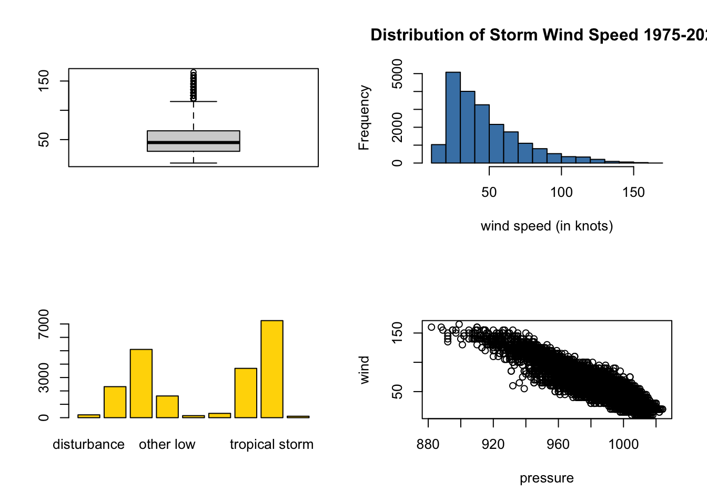
# create a table of status counts
# we will pull of the row names of the table
# as the labels in the legend
status.table <- table(storms$status)
plot(wind ~ status, # quantitative first ~ categorical second
data = storms, # name of data frame
col = my.colors, # fill colors colors
ylab = "Wind speed in knots", # vertical axis label
main = "Wind Speeds of Storms by Status") # main title
# we can add a legend to identify which plot is which storm status
legend(x = "topright", # place legend in top right corner
legend=rownames(status.table), # each row of table is label in legend
fill = my.colors) # fill colors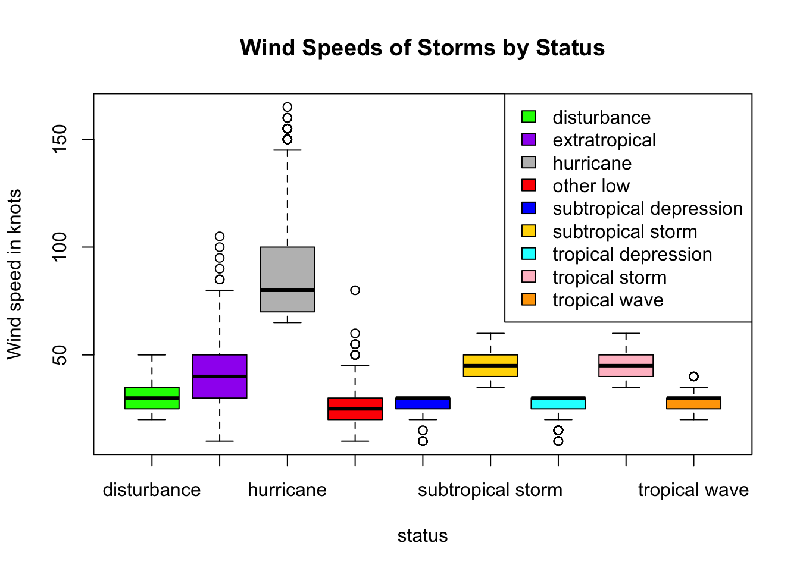
More Advanced Plots with ggplot2
The previous plots were created using R’s base graphics system.
- base graphics are fast and simple to produce while looking professional.
A fancier alternative is to construct plots using the ggplot2 package.
- The
ggstands for Grammar of Graphics.
In its simplest form, to construct a (useful) plot in ggplot2, you need to provide:
- A
ggplotobject.- This is usually the object that holds your data frame.
- The data frame is passed to
ggplotvia the firstdataargument.
- A geometry object.
- Roughly speaking, this is the kind of plot you want.
- e.g.,
geom_histogramfor a histogram,geom_pointfor a scatter plot,geom_densityfor a density plot.
- An aesthetic mapping.
- Aesthetic mappings describe how variables in the data are mapped to visual properties of a geometry.
- This is where you specify which variable with be the
xvariable, theyvariable, which variable will control color in the plots, etc.
- See https://ggplot2.tidyverse.org for documentation.
- Download a ggplot2 cheatsheet.
Loading ggplot2
The
ggplot2package is already installed as a default package in Google Colaboratory.However, recall each time we start or restart a new session and want to access the library of functions and data in the package, we need to load the library of files in the package with the
librarycommand.Run the first code cell below to load the
ggplot2package.If restarting a new session, you also need to reload the
dplyrpackage to accessstormsdata.
library(ggplot2) # make sure you have installed ggplot2 package# may need to reload
library(dplyr)Plotting One Numerical Variable with ggplot2
To create various types of plots for one quantitative variable, such as wind:
- The ggplot object is the data frame
storms. - The aesthetic is the variable
windthat we will plot on the x-axis. - Geometric objects histogram, density, and boxplot are specified in each of the three code cells below.
- There a numerous options we can include as well.
# create a histogram
ggplot(storms, aes(x = wind)) +
geom_histogram(fill = "steelblue", color="black")`stat_bin()` using `bins = 30`. Pick better value `binwidth`.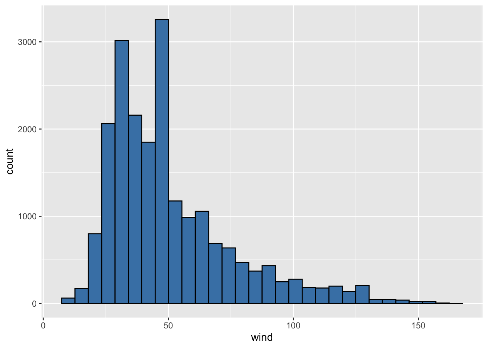
# create a density plot
ggplot(storms, aes(x = wind)) +
geom_density(color="red") +
theme_bw() # adding theme_bw() makes white background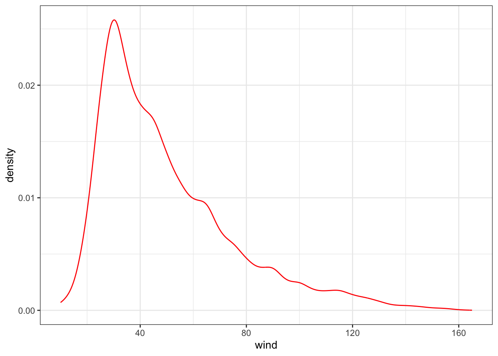
# create a boxplot
ggplot(storms, aes(x = wind)) +
geom_boxplot(color="black", fill="blueviolet")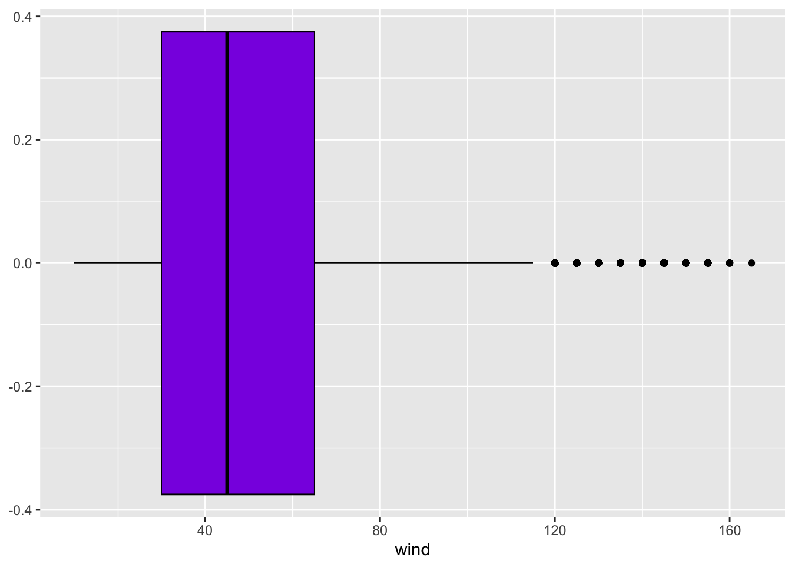
Scatter Plots with ggplot2
To create a scatter plot to compare two quantitative variables such as wind speed and pressure of storms:
- The ggplot object is the data frame
storms. - The aesthetic are the variables
pressureis the predictor plotted on the x-axis.windis the response plotted on the y-axis.t
- Geometric object is scatter.
# create a scatter plot
ggplot(storms) +
geom_point(aes(x = pressure, y = wind))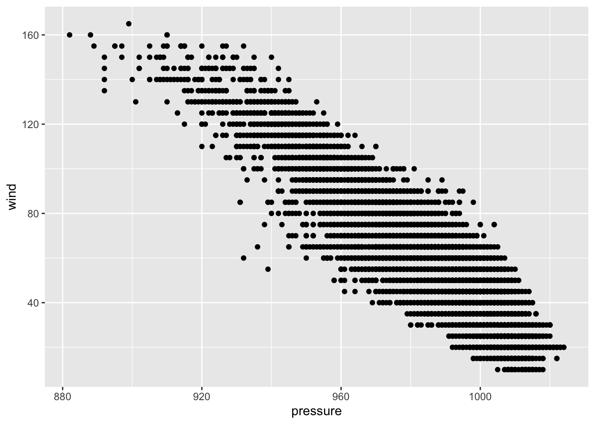
Scaling ggplot2 plots
In general, scaling is the process by which ggplot2 maps variables to unique values. When this is done for discrete numeric or qualitative variables, ggplot2 will often scale the variable to distinct colors, symbols, or sizes, depending on the aesthetic mapped.
In the example below, we map the status variable to the color aesthetic, which is then scaled to different colors for the different status levels.
# scatter plot with scaling
ggplot(storms) +
geom_point(aes(x = pressure, y = wind, color = status))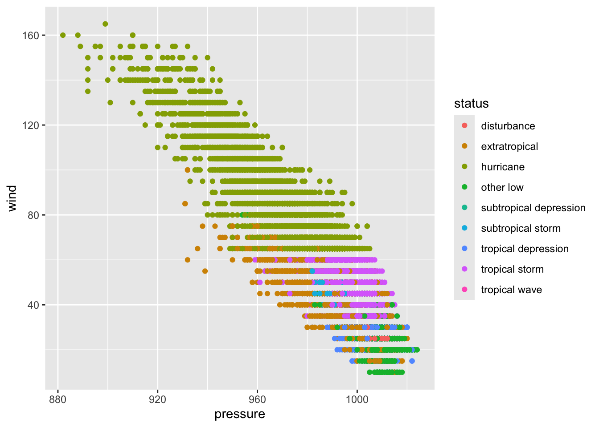
Scaling by Shape
Alternatively, we can map the status variable to the shape aesthetic, which creates a plot with different shapes for each observation based on the status level.
- By default, 6 shapes can be used.
- There are 9 different status of storms.
- The last option manually sets the shapes for each status to avoid an error.
# scaling by shape
ggplot(storms) +
geom_point(aes(x = pressure, y = wind, shape = status)) +
scale_shape_manual(values=0:8) # manually setting shapes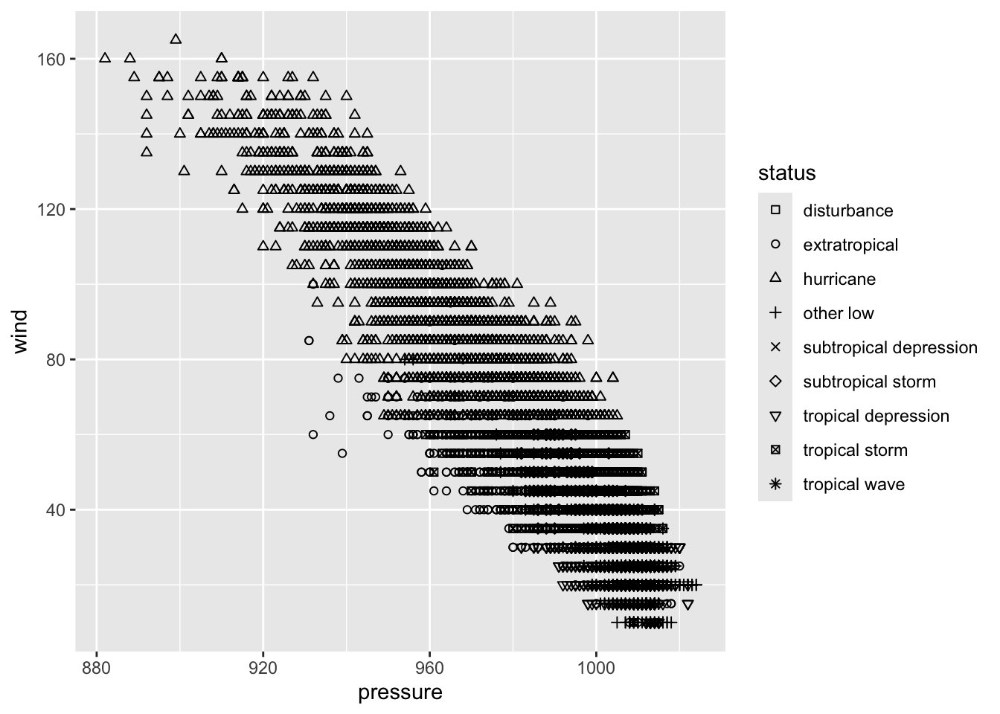
Applying Multiple Scales
We can even combine these two aesthetic mappings in a single plot to get different colors and symbols for each level of month and status, respectively.
- By default, 6 shapes can be used.
- There are 9 different status of storms.
- The last option manually sets the shapes for each status to avoid an error.
# scaling by month and status
ggplot(storms) +
geom_point(aes(x = pressure, y = wind, color = month, shape = status)) +
scale_shape_manual(values=0:8) # manually setting shapes for status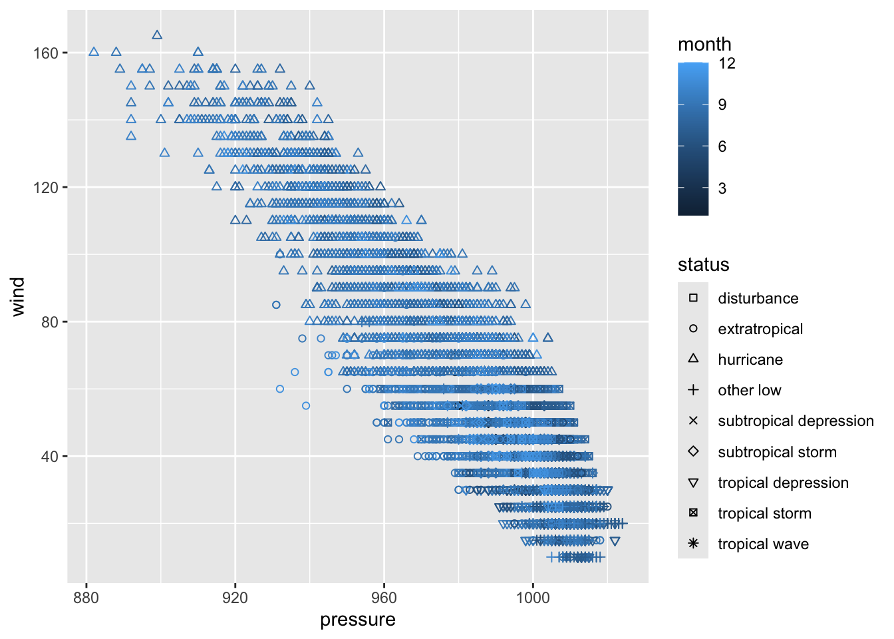
Facetting in ggplot2
Faceting creates separate panels (facets) of a data frame based on one or more faceting variables.
To create various scatter plots (one for each category) to compare two quantitative variables such as wind speed and pressure of storms, we can add a facet_grid.
- Note the NA plot corresponds to the storms that are not hurricanes.
# faceting by category
ggplot(storms) +
geom_point(aes(x = pressure, y = wind)) +
facet_grid(~ category)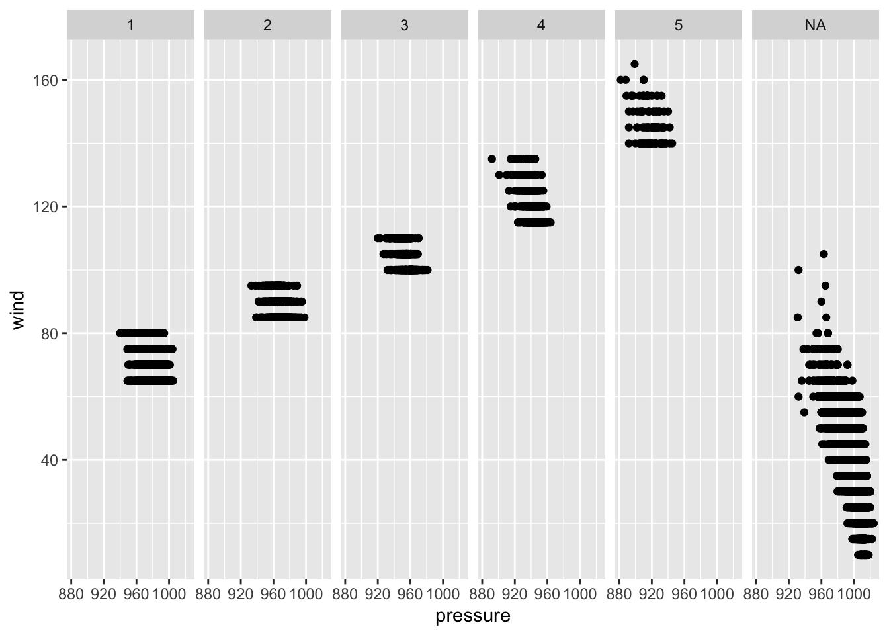
Bar Charts with ggplot2
Imagine we would like to compare the number of different types of storms (status) that occurred in each month.
Stacked Bar Charts of Counts with ggplot2
To create a stacked bar chart of counts for one or more qualitative variable:
- The ggplot object is the data frame
storms. - Geometric object is
geom_bar. - The aesthetic is specified as:
- Fill color, (
fill) isstatus. - The height of each bar is summarizing the statistic (
stat) is"count". - The
position="stack"creates a stacked bar chart of counts.
- Fill color, (
# stacks bars on top of each other
ggplot(storms, aes(x=month)) +
geom_bar(aes(fill=status), stat = "count", position="stack") +
ggtitle("Occurrence of Storms by Month")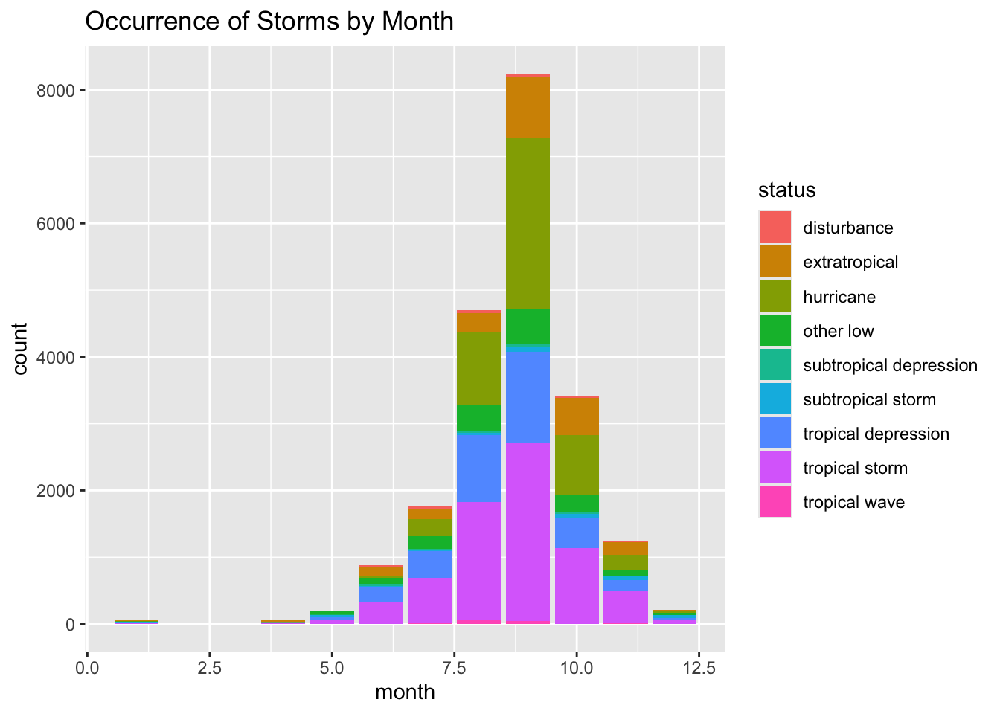
Stacked Relative Frequency Bar Charts with ggplot2
To create a stacked bar chart of relative frequencies for two qualitative variables:
- The ggplot object is the data frame
storms. - Geometric object is
geom_bar. - The aesthetic is specified as:
- Fill color, (
fill) isstatus. - The height of each bar is summarizing the statistic (
stat) is"count". - The
position="fill"creates a stacked bar chart of relative frequencies.
- Fill color, (
# stacks bars and standardizing each stack
ggplot(storms, aes(x=month)) +
geom_bar(aes(fill=status), stat = "count", position="fill") +
ggtitle("Occurrence of Storms by Month")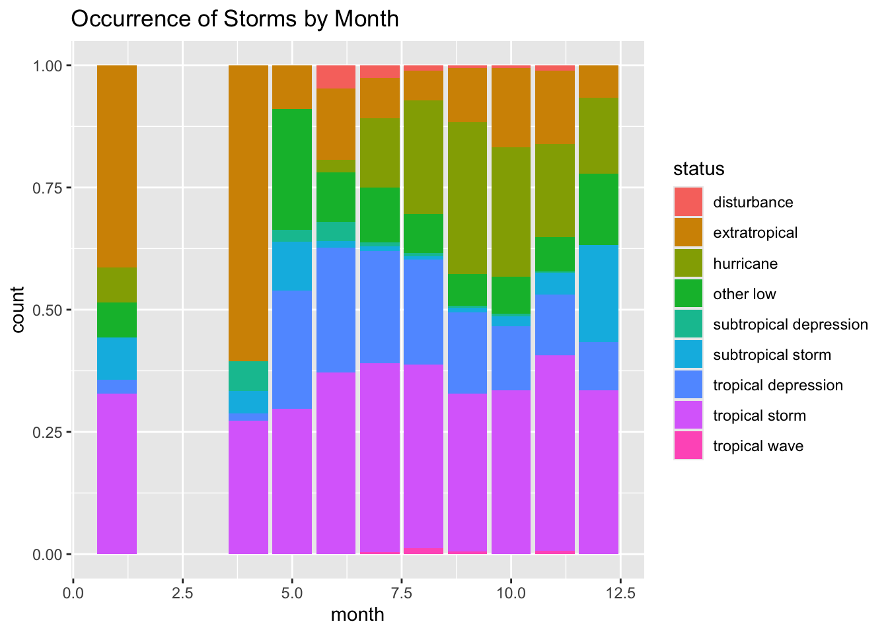
Grouped Bar Charts of Counts with ggplot2
To create various types of bar plots for one or more qualitative variables:
- The ggplot object is the data frame
storms. - Geometric object is
geom_bar. - The aesthetic is specified as:
- Fill color, (
fill) isstatus. - The height of each bar is summarizing the statistic (
stat) is"count". - The
position="dodge"creates a stacked bar chart.
- Fill color, (
# creates grouped bar chart
ggplot(storms, aes(x=month)) +
geom_bar(aes(fill=status), stat = "count", position="dodge") +
ggtitle("Occurrence of Storms by Month")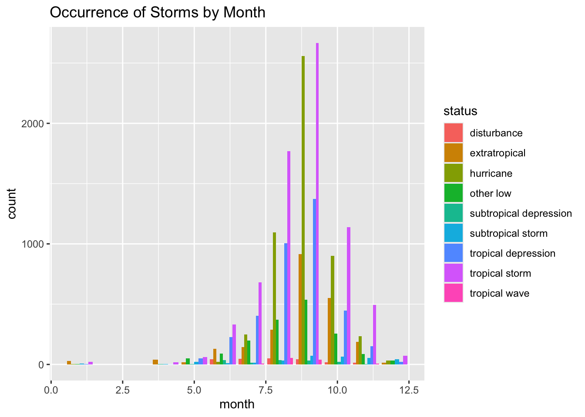
Spatial Plots with mapview
Load Library
library(mapview) # load spatial mapping packageMapping All Storms by Status
mapview(storms, xcol = "long", ycol = "lat",
zcol = "status",
crs = 4269, grid = FALSE)Mapping Category 5 Hurricanes
First we filter out observations with category equal to 5.
cat5 <- subset(storms , category == "5") # keep only category 5mapview(cat5, xcol = "long", ycol = "lat", cex = "wind", crs = 4269, grid = FALSE)mapview(cat5, xcol = "long", ycol = "lat", zcol = "name", cex = "wind", crs = 4269, grid = FALSE)Creative Commons License Information

Statistical Methods: Exploring the Uncertain by Adam Spiegler is licensed under a Creative Commons Attribution-NonCommercial-ShareAlike 4.0 International License.